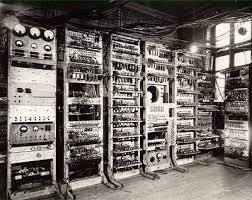

CPU
ARITHMETIC LOGIC UNIT (ALU) DAN REGISTER
Arithmatic Logical Unit (ALU), adalah salah satu bagian/komponen dalam sistem komputer yang berfungsi melakukan operasi/perhitungan aritmatika dan logika. Contoh operasi aritmatika adalah operasi penjumlahan dan pengurangan, sedangkan contoh operasi logika adalah logika AND dan OR. ALU bekerja besama-sama memori, di mana hasil dari perhitungan di dalam ALU di simpan ke dalam memori. Arithmetic Logical Unit (ALU) merupakan unit penalaran secara logic. ALU ini merupakan Sirkuit CPU berkecepatan tinggi yang bertugas menghitung dan membandingkan. Angka-angka dikirim dari memori ke ALU untuk dikalkulasi dan kemudian dikirim kembali ke memori. Jika CPU diasumsikan sebagai otaknya komputer, maka ada suatu alat lain di dalam CPU tersebut yang dikenal dengan nama Arithmetic Logical Unit (ALU), ALU inilah yang berfikir untuk menjalankan perintah yang diberikan kepada CPU tersebut. ALU terdiri dari dua bagian, yaitu unit arithmetika dan unit logika boolean, yang masing – masing memiliki spesifikasi dan tugas tersendiri. Fungsi-fungsi yang didefinisikan pada ALU adalah Add (penjumlahan), Addu (penjumlahan tidak bertanda), Sub (pengurangan), Subu(pengurangan tidak bertanda), and, or,xor, sll (shift left logical), srl (shift right logical), sra (shift right arithmetic), dan lain-lain.
Sejarah dan Perkembangan Komputer dari Generasi ke Generasi
Komputer Generasi Pertama (1940-1956)
Perangkat yang pertama ini ternyata dikembangkan untuk desain peluru kendali dan pesawat. Penggagas komputer generasi pertama adalah Konrad Zuse, seorang insinyur dari Jerman. Komputer ini memanfaatkan tabung hampa udara untuk sirkuit dan drum magnetik sebagai memori.
Komputer generasi pertama ini dikenal sangat mahal dan besar, loh! Besarnya hingga bisa menempati seluruh ruangan. Contohnya ENIAC, komputer pertama di dunia yang memiliki tinggi 2,4 meter, panjang 30 meter, dan berat 30 ton.
Komputer generasi ini juga mengandalkan machine language, yakni level bahasa pemrograman paling rendah yang dimengerti komputer. Bahasa pemrograman ini hanya dapat menyelesaikan satu perhitungan setiap waktu, dan untuk menyetel perhitungan baru membutuhkan berhari-hari bahkan berminggu-minggu.
Komputer Generasi Kedua (1956-1963)
Ditemukannya transistor pada masa ini mengubah tampilan komputer generasi pertama. Perkembangan generasi kedua menjadi awal perkembangan komputer dengan digantinya tabung hampa dengan transistor.
Transistor memungkinkan komputer jadi lebih kecil, murah, cepat, dan hemat energi. Selain itu, pada generasi kedua memori inti magnetik juga mengalami perkembangan.
Secara umum, komputer generasi ini sudah menggunakan bahasa pemrograman tingkat tinggi, kapasitas memori sudah cukup besar, lebih hemat listrik, dan proses operasinya lebih cepat.
Komputer Generasi Ketiga (1964-1971)
Komputer generasi ketiga ditandai dengan pengembangan integrated circuit. Dalam pemakaiannya, transistor menjadikan komputer cepat panas. Hal ini yang mengakibatkan komputer generasi kedua mulai digantikan.
Lalu pada 1958, Jack Billy menciptakan IC atau Integrated circuit chip. IC ini adalah kepingan kecil yang dapat menampung berbagai komponen menjadi satu. Jadi, komputer generasi ketiga memiliki ukuran lebih kecil, cepat, dan murah. Komputer generasi ini juga memungkinkan untuk dipasarkan secara umum.

Komputer Generasi Keempat (1971-sekarang)
Komputer generasi keempat memiliki terobosan berupa mikroprosesor yang dapat menyatukan ribuan IC ke dalam sebuah keeping silicone.
Kalau komputer generasi pertama yang besarnya bisa menempati seluruh ruangan, komputer generasi keempat sudah dapat digenggam manusia.
Pada masa ini, mulai muncul juga laptop yang dapat dibawa kemana-mana. Seiring waktu, mereka pun dapat dihubungkan dalam sebuah jaringan, yang kemudian menjadi awal perkembangan internet.

Komputer Generasi Kelima (sekarang-masa depan)
Nah, komputer yang kita gunakan sekarang ini adalah komputer generasi kelima. Ditandai dengan adanya LSI atau large scale integration dimana ribuan mikroprosesor dapat dipadatkan dalam sebuah mikroprosesor. Komputer ini juga ditandai dengan kemunculan semikonduktor.
Penggunaan nano technology dan komputer quantum juga akan merubah penampilan komputer yang kita kenal sebelumnya. Komputer generasi kelima dikembangkan untuk bisa merespon suara bahasa dan mampu belajar secara sadar.
Gerbang Logika (Logic Gate)
Pengertian Umum
Gerbang logika atau logic gates adalah proses pengolahan input bilangan biner dengan teori matematika boolean. Seperti yang kita ketahui, bilangan biner sendiri terdiri dari angka 1 dan 0. Logic gate ini direpresentasikan menggunakan tabel kebenaran. Jika memiliki nilai benar (true) akan ditunjukan dengan angka “1”. Sebaliknya, jika memiliki nilai salah (false) akan ditunjukan dengan angka “0”.
Fungsi Gerbang Logika
Gerbang logika memiliki fungsi untuk melakukan fungsi logika dasar untuk membentuk sirkuit digital yang terintegrasi. Kebanyakan logic gate menggunakan bilangan biner 0 atau 1 bisa juga disebut true atau false. Biasanya terdiri dari dua buah nilai input dan satu nilai output.
Jenis-jenis gerbang logika
- Gerbang AND
- Gerbang OR
- Gerbang NOT
- Gerbang NAND
- Gerbang NOR
- Gerbang XOR
- Gerbang XNOR

Jenis pertama adalah gerbang AND. Gerbang AND ini memerlukan dua atau lebih input untuk menghasilkan satu output. Jika semua atau salah satu inputnya merupakan bilangan biner 0, maka outputnya akan menjadi 0. Sedangkan jika semua input adalah bilangan biner 1, maka outputnya akan menjadi 1.

Jenis kedua adalah gerbang OR. Sama seperti gerbang sebelumnya, gerbang ini juga memerlukan dua input untuk menghasilkan satu output. Gerbang OR ini akan menghasilkan output 1 jika semua atau salah satu input merupakan bilangan biner 1. Sedangkan output akan menghasilkan 0 jika semua inputnya adalah bilangan biner 0.
Jenis berikutnya adalah gerbang NOT. Gerbang NOT ini berfungsi sebagai pembalik keadaan. Jika input bernilai 1 maka outputnya akan bernilai 0 dan begitu juga sebaliknya.
Selanjutnya adalah gerbang NAND. Gerbang NAND ini adalah gabungan dari gerbang AND dan gerbang NOT. Karena itu output yang dihasilkan dari gerbang NAND ini adalah kebalikan dari gerbang AND
Berikutnya adalah gerbang NOR. Gerbang NOR ini adalah gabungan dari gerbang OR dan gerbang NOT. Sehingga output yang dihasilkan dari gerbang NOR ini adalah kebalikan dari gerbang OR
Jenis berikutnya adalah gerbang XOR. Gerbang XOR ini memerlukan dua input untuk menghasilkan satu output. Jika input berbeda (misalkan: input A=1, input B=0) maka output yang dihasilkan adalah bilangan biner 1. Sedangkan jika input adalah sama maka akan menghasilkan output dengan bilangan biner 0.
Jenis yang terakhir adalah gerbang XNOR. Gerbang XNOR ini memerlukan dua input untuk menghasilkan satu output. Jika input berbeda (misalkan: input A=1, input B=0) maka output yang dihasilkan adalah bilangan biner 0. Sedangkan jika input adalah sama maka akan menghasilkan output dengan bilangan biner 1.